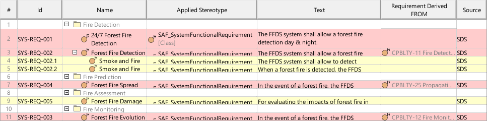
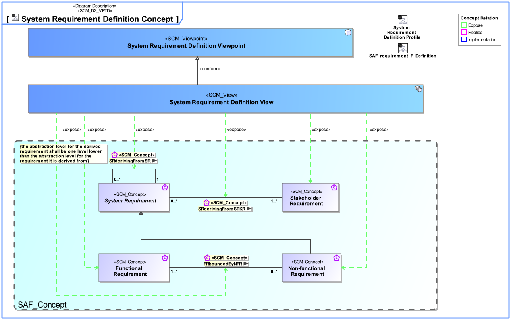
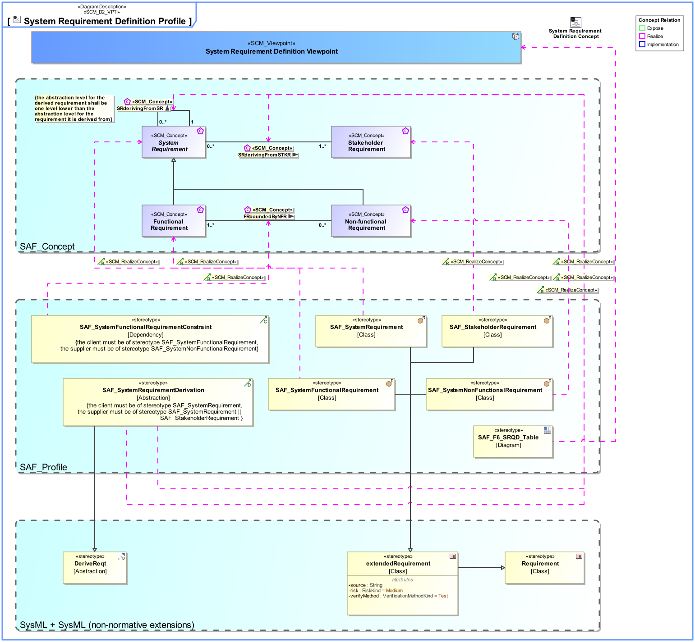

F6_SRQD System Requirement Definition Viewpoint
| Domain | Aspect | Maturity |
|---|---|---|
| Functional | Requirement |

The System Requirement Definition Viewpoint specifies functions, non-functional properties, or constraints of the System. System Requirements are captured, the interrelationships between Functional and Non-Functional Requirements on the same level of abstraction and the traceability to Stakeholder Requirements are depicted.
The System Requirement Definition Viewpoint supports the “System Requirements Definition Process” activities of the INCOSE SYSTEMS ENGINEERING HANDBOOK 2015 [§4.3] and contributes to the System Requirements Verification and Traceability Matrix (RVTM).
A tabular format listing
The following Stereotypes / Model Elements are used in the Viewpoint:
The Diagram shows the concepts exposed by the viewpoint, and related concepts if necessary.

| Concept | Documentation |
|---|---|
| FRboundedByNFR | Specifies the fact that a Non-Functional Requirement constrains Functional Requirements. |
| Functional Requirement | Functional Requirements specify System Functions of the System. |
| Non-functional Requirement | Non-Functional Requirements specify the quality of System Functions, or non-functional requests like legal conformance. |
| SRderivingFromSR | Specifies the fact that System Requirements are derived from a Stakeholder Requirement. Note: This is the relationship of requirements of different architectural levels. When the team responsible for the subsystem has direct access to the full upstream requirements set, then no subcontractor relationship needs to be established. |
| SRderivingFromSTKR | Specifies the fact that a System Requirement is derived from a Stakeholder Requirement. Note: It may be used in a customer supplier relationship situation and supports the V Model concept of "External Unit Specification". See [VXT]. |
| Stakeholder Requirement | A Stakeholder Requirement is a Requirement imposed by a Stakeholder. Stakeholder Concerns are refined by Stakeholder Requirements applicable for the SOI. The Stakeholder Requirements are a result of discussions and agreements of how the SOI addresses the Concerns of the respective Stakeholder. |
The Diagram shows the implementation of exposed concepts.
